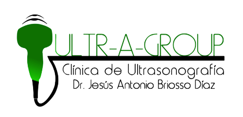

En Clínica Ultra-Group, te ofrecemos un paquete completo de ultrasonografía y consulta médica, diseñado para brindarte un diagnóstico preciso y atención de calidad. Nuestro servicio incluye la opción de elegir entre diversas ultrasonografías, así como una consulta médica para revisar los resultados.
Ultrasonografía: Realizamos ultrasonografías avanzadas para detectar una variedad de condiciones en diferentes partes del cuerpo, como el abdomen, los riñones, la próstata, entre otros. La ultrasonografía es una técnica no invasiva, segura y eficaz para obtener imágenes detalladas de los órganos internos sin causar molestias.
Mejora tu salud y bienestar con nuestros servicios médicos de última tecnología, obteniendo resultados rápidos y confiables.
En Ultra-Group, contamos con tecnología avanzada y un equipo de profesionales comprometidos con tu salud. Nuestras ultrasonografías y consultas médicas te ofrecen un diagnóstico integral para ayudarte a tomar decisiones informadas sobre tu bienestar.
¡La salud es lo primero! La ultrasonografía es una técnica de diagnóstico de imagen que permite ver órganos y estructuras blandas del cuerpo mediante ondas sonoras. Estas ondas se emiten a través de un transductor que capta el eco de los órganos, y las señales procesadas por un computador generan imágenes detalladas de los tejidos examinados.
Este examen es no invasivo, sin dolor ni molestias, y es extremadamente útil para detectar tumores, quistes y otras afecciones internas. Con nuestra oferta, podrás escoger la ultrasonografía que más se adecue a tus necesidades.